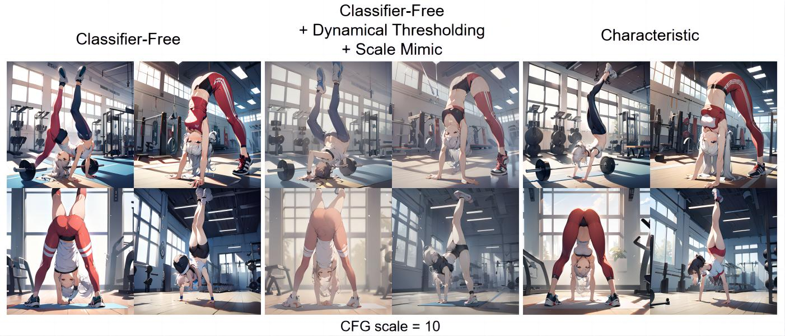
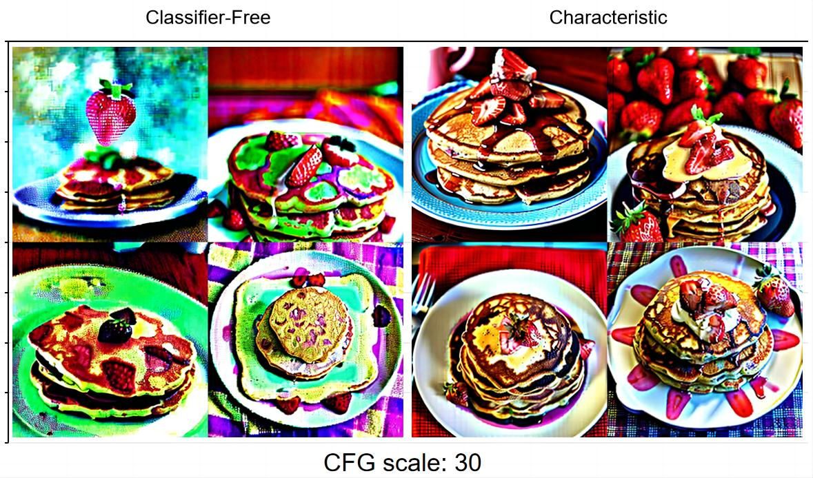

1girl, handstand, sportswear, gym
1girl, handstand, sportswear, gym
Negative prompt: low quality, worst quality,
Batch size: 1
Steps: 30, Sampler: DPM++ 2M Karras, CFG scale: 10, Seed: 0, Size: 1024x1024, Model hash: 1449e5b0b9, Model: animagineXLV3_v30,
Dynamic thresholding
Dynamic thresholding enabled: True, Mimic scale: 7, Separate Feature Channels: True, Scaling Startpoint: MEAN, Variability Measure: AD, Interpolate Phi: 1, Threshold percentile: 100, Mimic mode: Half Cosine Down, Mimic scale minimum: 0,
Characteristic Guidance:
Regularization Strength: 1, Regularization Range Over Time: 1, Max Num. Characteristic Iteration: 50, Num. Basis for Correction: 1, Reuse Correction of Previous Iteration: 0, Log 10 Tolerance for Iteration Convergence: -4, Iteration Step Size: 1, Regularization Annealing Speed: 0.4, Regularization Annealing Strength: 0.5, AA Iteration Memory Size: 2,
Version: v1.7.0

1girl, running, mountain, grass,
Negative prompt: low quality, worst quality,
Batch size: 4
Steps: 30, Sampler: UniPC, CFG scale: 30, Seed: 0, Size: 1024x1024, Model hash: 1449e5b0b9, Model: animagineXLV3_v30,
Characteristic Guidance:
Regularization Strength: 5, Regularization Range Over Time: 1, Max Num. Characteristic Iteration: 50, Num. Basis for Correction: 1, Reuse Correction of Previous Iteration: 0, Log 10 Tolerance for Iteration Convergence: -4, Iteration Step Size: 1, Regularization Annealing Speed: 0.4, Regularization Annealing Strength: 0.5, AA Iteration Memory Size: 2,
Version: v1.7.0

1girl, handstand, sports, close_up
Batch size: 1
Steps: 40, Sampler: DPM++ 2M Karras, CFG scale: 10, Seed: 2635612998, Size: 512x512, Model hash: 1a189f0be6, Model: v1-5-pruned, VAE hash: 735e4c3a44, VAE: vae-ft-mse-840000-ema-pruned.safetensors,
Characteristic Guidance:
Regularization Strength: 0.25, Regularization Range Over Time: 0.25, Max Num. Characteristic Iteration: 50, Num. Basis for Correction: 1, Reuse Correction of Previous Iteration: 0, Log 10 Tolerance for Iteration Convergence: -4, Iteration Step Size: 1, Regularization Annealing Speed: 0.4, Regularization Annealing Strength: 0.5, AA Iteration Memory Size: 2,
Version: v1.6.1

newspaper, news, english
Batch size: 1
Steps: 40, Sampler: DPM++ 2M Karras, CFG scale: 10, Seed: 3470006633, Size: 512x512, Model hash: 1a189f0be6, Model: v1-5-pruned, VAE hash: 735e4c3a44, VAE: vae-ft-mse-840000-ema-pruned.safetensors,
Characteristic Guidance:
Regularization Strength: 1, Regularization Range Over Time: 1, Max Num. Characteristic Iteration: 50, Num. Basis for Correction: 1, Reuse Correction of Previous Iteration: 0, Log 10 Tolerance for Iteration Convergence: -4, Iteration Step Size: 1, Regularization Annealing Speed: 0.4, Regularization Annealing Strength: 0.5, AA Iteration Memory Size: 2,
Version: v1.6.1

strawberry pancake
strawberry pancake
Batch size: 4
Steps: 20, Sampler: UniPC, CFG scale: 30, Seed: 669228313, Size: 512x512, Model hash: c0d1994c73, Model: realisticVisionV20_v20, VAE hash: 735e4c3a44, VAE: vae-ft-mse-840000-ema-pruned.safetensors,
Characteristic Guidance:
Regularization Strength: 1.5, Regularization Range Over Time: 1, Max Num. Characteristic Iteration: 30, Num. Basis for Correction: 1, Reuse Correction of Previous Iteration: 0, Log 10 Tolerance for Iteration Convergence: -4, Iteration Step Size: 1, Regularization Annealing Speed: 0.4, Regularization Annealing Strength: 0.5, AA Iteration Memory Size: 2,
Version: v1.6.1

lake, night_sky, meteor, makoto_shinkai
Batch size: 1
Steps: 40, Sampler: DPM++ 2M Karras, CFG scale: 30, Seed: 3255477725, Size: 1024x256, Model hash: 1a189f0be6, Model: v1-5-pruned, VAE hash: 735e4c3a44, VAE: vae-ft-mse-840000-ema-pruned.safetensors,
Characteristic Guidance:
Regularization Strength: 1, Regularization Range Over Time: 1, Max Num. Characteristic Iteration: 30, Num. Basis for Correction: 1, Reuse Correction of Previous Iteration: 0, Log 10 Tolerance for Iteration Convergence: -4, Iteration Step Size: 1, Regularization Annealing Speed: 0.4, Regularization Annealing Strength: 0.5, AA Iteration Memory Size: 2,
Version: v1.6.1

a birthday party with four dogs
Batch size: 4
Steps: 20, Sampler: UniPC, CFG scale: 10, Seed: 2693088926, Size: 512x512, Model hash: c0d1994c73, Model: realisticVisionV20_v20, VAE hash: 735e4c3a44, VAE: vae-ft-mse-840000-ema-pruned.safetensors,
Characteristic Guidance:
Regularization Strength: 1, Regularization Range Over Time: 1, Max Num. Characteristic Iteration: 30, Num. Basis for Correction: 1, Reuse Correction of Previous Iteration: 0, Log 10 Tolerance for Iteration Convergence: -4, Iteration Step Size: 1, Regularization Annealing Speed: 0.4, Regularization Annealing Strength: 0.5, AA Iteration Memory Size: 2,
Version: v1.6.1